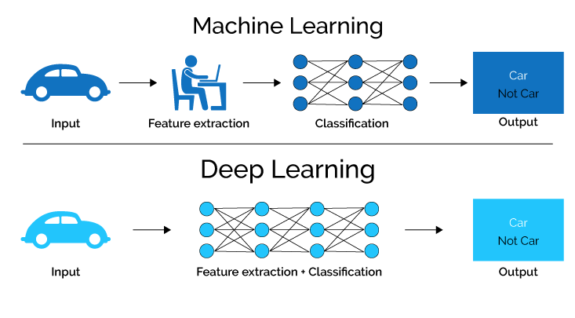

Thoughts about deeplearning
Deep learning is quite popular in computer science. Some think deep learning model is a black box. However, I think some part of deel learning model can be explicitly explained.
What is deep learning?

Compared with conventional machine learning, deep learning models have much more complex network architecture and act more like human. Why am I say that the deep learning models are anthropoid? Deep learning models are unlike conventional machine learning, which is fed by handcraft features and apply mathematical algorithms to cluster or classfy the features. Deep learning models are able to learn what feature is vital for the specific task and some method such as pretraining, fine-tune strategy, mutiple loss fuction etc. to improve the models’ capabilities of learning and take advanteges of the features.
Process of deep learning
In my opinion, deep learning models act like human’s neural network. It is why the deep learning is called neural network as well. In one sentance, deep learning model takes input and project the input to a high dimensional feature in a learnt way and loss function tell models how to learn project the input. It is analogous to a children learn how to recognize the world. Taking a simple problem as a example, classfy the numbers, the nerual network takes number’s pictures and output what it is. In the training period, the softmax loss function tell the model how to adjust the weight based on the output that model gives. The parents are like loss function, telling children whether they are right or wrong, and help them correct the answer.
Thoughts about convolution, loss and architectures.
Convolution
In deep learning, a convolutional neural network is a class of artificaial neural network, most commonly applierd to analyze visual imagery. The goal of convolutional neural network is to find the optimized weight of a group of filters in order to render the best features.

This image shows how to compute convolution. In traditonal machine learning, the filters are finely designed by human to extract features that are best suited for the task. On the contary, deep learning learn the weights of filters.
Loss function
Loss function tell the neural network the quality of the output it gives. As a good teacher for children, a well designed loss function or mutiple loss functions allow the network to learn better feature representation.
The mostly used loss functions:
Softmax loss function
Softmax loss function is commonly used in classf problem. It is simple and elegant. It is good for optimize the distence between inter-class, but it is weak to optimize the distence of intra-class. As a result, there are a lot of variants, such as weighted softmax, Large-margin Softmax and so on. Additionally, softmax loss can be added a temperature hyper-parameter where it can alter the contribution of the output. The bigger temperature make the contribution smoother, the smaller temperature make the contribution sharper.
Metric learning
Pairwise Loss and Triplet Loss are commonly used in metric learning. Those loss functions usually pull the postive samples together and push away postive and negative samples.
Architectures
Simple
- LeNet
This network only contains two convolutional layers. It is limited by the ability of computation, it are not able to handle high-resolution images.
Complex
With the development of computation, it allows to train more complex network. The network are more and more complex and deeper. However, it brings many problem, such as gradience explode or dissaper. ResNet comes to picture to solve this problem. Recently, vision transformer is getting more attention, and attention mechanism get into computer vision area.